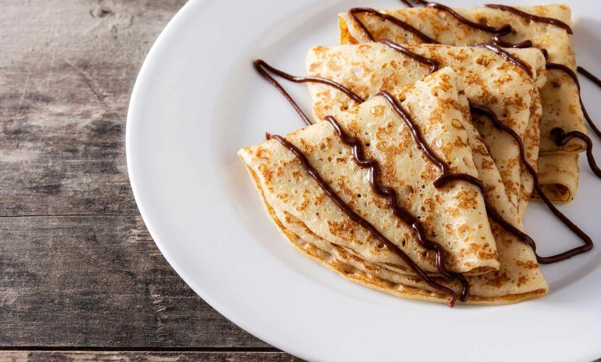

Crepes dulces con Nutella

Ingredientes
Principal
- 1 huevo
- 250ml de leche
- 125g de harina
- 1 cucharada de azúcar
- Nutella
Preparación
- Bate el huevo con la leche, añade la harina y el azúcar.
- Cocina los crepes en una sartén con un poco de aceite.
- Rellena con Nutella y enrolla.
Dificultad:bajaCocina:francesaVegetariana:síCelíacos:noAnticáncer:no
✔🍳🌱
Autor:Anónimo